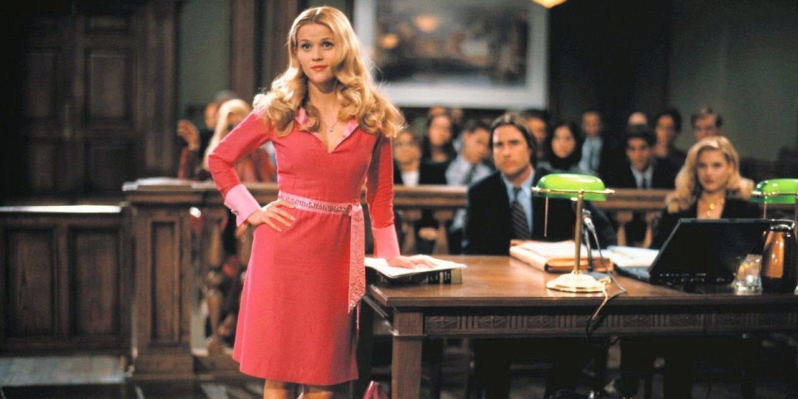
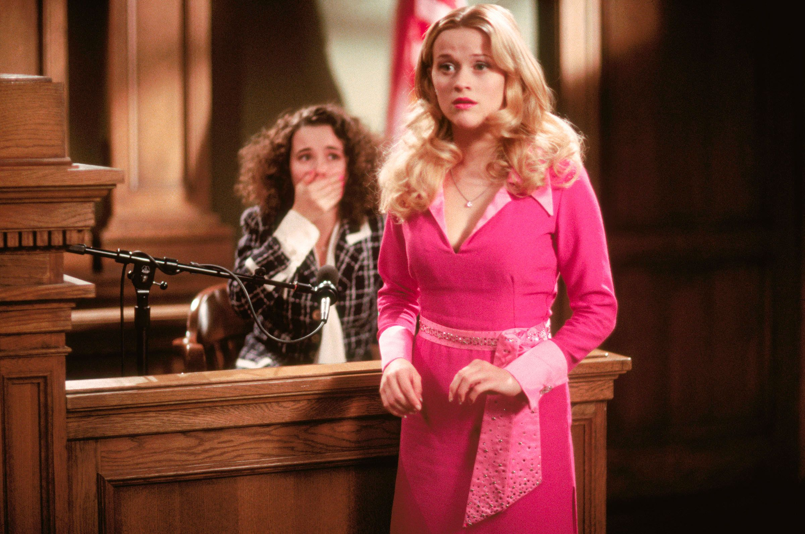
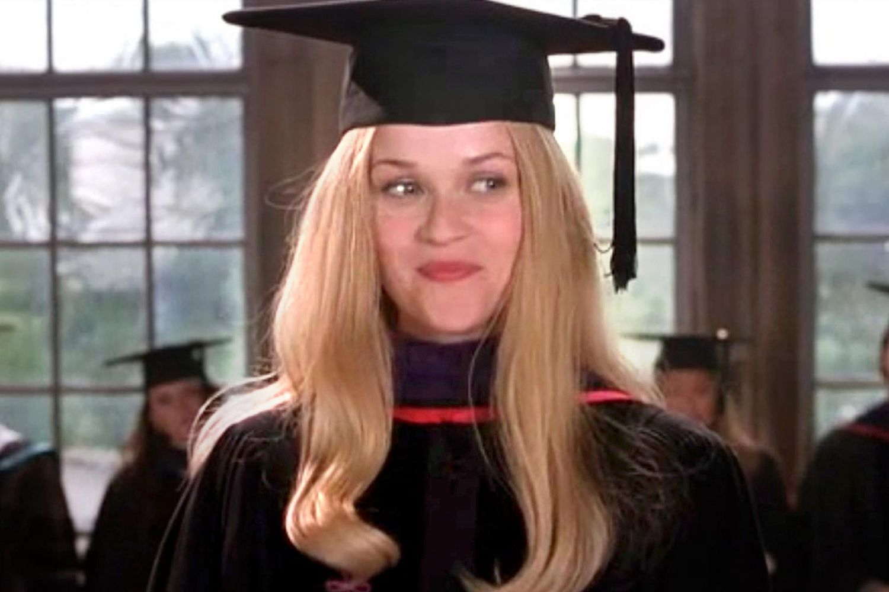

Elle's First Case
Elle runs the court room
Elle Woods ended up running the courtroom instead of the other attorney because she brought something no one else did—genuine insight, empathy, and unshakable attention to detail. While the more experienced attorneys overlooked key clues, Elle's unique perspective and refusal to underestimate anyone gave her the edge. She listened, connected with the witness, and noticed things others dismissed—like a well-timed perm contradiction that cracked the case wide open. Her confidence grew with every objection she nailed and every truth she uncovered, proving that brilliance doesn’t always come in a gray suit. By the end, it was clear: Elle didn’t just belong in the courtroom—she owned it.
Elle's Realization
In a pivotal courtroom moment, Elle Woods pieced together the truth that no one else saw: it wasn’t Brooke who killed her husband—it was his own daughter, Chutney. As Elle questioned Chutney on the witness stand, her instincts kicked in, and a simple detail about hair care unraveled the entire story. Chutney claimed she was in the shower during the murder, but her freshly permed hair told a different tale—no one with a fresh perm would dare get it wet so soon. With that revelation, Elle exposed the lie and revealed the real killer, proving once again that her intuition, intelligence, and even her knowledge of beauty were powerful tools in the courtroom.
Elle Graduates
Elle Woods’ graduation from Harvard Law was the ultimate full-circle moment—a dazzling triumph that proved everyone who doubted her completely wrong. Standing at the podium in her cap and gown, Elle delivered a heartfelt and empowering speech about staying true to yourself, even when the world tells you you’re not enough. She had transformed from an underestimated sorority girl into a top law student, not by changing who she was, but by embracing her strengths and leading with confidence, kindness, and authenticity. As she looked out at her classmates, Elle wasn’t just celebrating a degree—she was celebrating a journey of growth, resilience, and unapologetic self-belief.